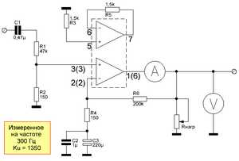
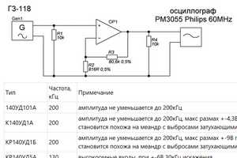
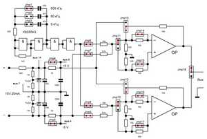
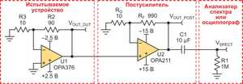

Статья AudioKiller на сайте electroclub.info анализирует нелинейные искажения (THD) операционных усилителей при работе на низкоомную нагрузку и высоких токах. Основной вывод заключается в том, что при снижении глубины обратной связи на высоких частотах собственное выходное сопротивление ОУ вызывает значительные искажения, требуя использования микросхем с низким Rвых или увеличения сопротивления нагрузки. Читайте подробный анализ на electroclub.info.

На форуме ldsound.club представлено масштабное любительское тестирование 122 операционных усилителей для оценки их полосы пропускания и линейности. В ходе эксперимента с использованием осциллографа Philips PM3055 зафиксированы характеристики отечественных и импортных ОУ при усилении до 1000 раз. Подробные результаты замеров читайте на ldsound.club.
Статья от компании «Миландр» на Хабре предлагает практическое руководство по измерению ключевых параметров операционных усилителей, включая напряжение смещения, коэффициент усиления, CMRR/PSRR и входные токи. В материале детально описаны схемы лабораторных стендов и методы минимизации паразитных наводок и температурного дрейфа. Подробную информацию читайте на Habr.

Конструкция рассчитана на сдвоенные ОУ и компараторы со стандартной распиновкой и собрана на небольшой макетной плате. В качестве переключателей использованы джамперы. diod.club.

Статья посвящена методике точного измерения собственных шумов прецизионных операционных усилителей (на примере микросхем Texas Instruments OPA376 и OPA211), уровень которых часто находится ниже порога чувствительности стандартных измерительных приборов. rlocman.ru.